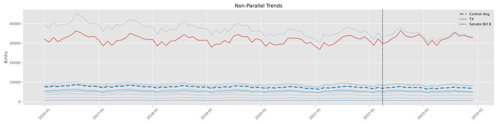
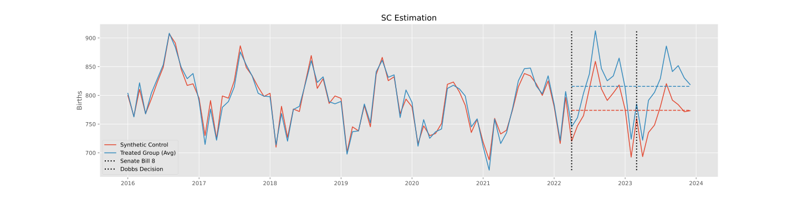

1 Background
Restrictions on abortion have rendered significant impact on abortion decision and the number of births. For example, Texas launched two abortion policies:
Senate Bill 8 of Texas: The bill launched on September 1st, 2021 forbidden abortions for pregnancy over six weeks.
Dobbs’ decision: The decision passed on June 24, 2022 allows states to make their own abortion policies.
Any impact on the number of abortions will be captured by the number of births around ten months later.
2 Methodology
2.1 Data
County by month level natality observations.
2.2 Model
As the parall trend assumption is hard to satisfy in this study, I made a synthetic Texas with states (e.g., New York and California) with abortion free policies and take it as control group. I use a synthetic difference-in-difference estimator (Arkhangelsky et al. 2021) to examine the effects of the two policies on abortions. The matrix for the estimator is as follows:
\[ Y = \begin{bmatrix} \pmb{Y}_{pre, co} & \pmb{Y}_{pre, tr} \\ \pmb{Y}_{post, co} & \pmb{Y}_{post, tr} \\ \end{bmatrix} \]
Recall the Diff-in-Diff estimator:
\[ Y_{it} = \beta_0 + \beta_1 Post_t + \beta_2 Treated_i + \beta_3 Treated_i Post_t + e_{it} \]
we fit unit (\(\alpha_i\)) and time (\(\beta_t\)) averages, alongside the treatment indicator.
\[ \hat{\tau}^{did} = \underset{\mu, \alpha, \beta, \tau}{argmin} \bigg\{ \sum_{i=1}^N \sum_{t=1}^T \big(Y_{it} - (\mu + \alpha_i + \beta_t + \tau D_{it}\big)^2 \bigg\} \]
and the Synthetic Controls:
\[ \hat{w}^{sc} = \underset{w}{\mathrm{argmin}} \ ||\pmb{\bar{y}}_{pre, tr} - \pmb{Y}_{pre, co} \pmb{w}_{co}||^2_2 \] \[ \text{s.t } \ \sum w_i = 1 \text{ and } \ w_i > 0 \ \forall \ i \]
where the outcome \(\pmb{Y}_{pre, co}\) is a \(T_{pre}\) by \(N_{co}\) matrix, where the columns are the units and the rows are the time periods. \(\pmb{w}_{co}\) is a \(N_{co}\) by 1 column vector, with one entry for each unit. Finally, \(\pmb{\bar{y}}_{pre, tr}\) is a \(T_{pre}\) by 1 column vector, where each entry is the time average of the treated units in the pre-treatment period.
The values of synthetic control group before and after treatment is:
\[ \pmb{y}_{sc} = \pmb{Y}_{co}\hat{\pmb{w}}^{sc} \]
the average treatment effects (\(ATT\)) are as follows:
\[ \hat{\tau} = \bar{y}_{post, tr} - \bar{y}_{post, sc} \]
Let’s say we have a matrix of treatment assignments \(D\), where the columns of the matrix are units and rows of the matrix are time periods.
\[ D = \begin{bmatrix} 0 & 0 & 0 & \dots & 0 & 0 \\ 0 & 0 & 0 & \dots & 0 & 0 \\ \vdots \\ 0 & 0 & 0 & \dots & 1 & 1 \\ 0 & 0 & 0 & \dots & 1 & 1 \\ \end{bmatrix} \]
We merge the equations of DiD and SC and obtain the estimator of SDiD:
\[ \hat{\tau}^{sdid} = \underset{\mu, \alpha, \beta, \tau}{argmin} \bigg\{ \sum_{i=1}^N \sum_{t=1}^T \big(Y_{it} - (\mu + \alpha_i + \beta_t + \tau D_{it}\big)^2 \hat{w}^{sdid}_i \hat{\lambda}^{sdid}_t \bigg\} \]
3 Results
My preliminary anticipation is that Dobbs’ decision make one third of women that would chose to terminate pregnancy change their mind to give birth to a baby.
Non-Parallel Trend

Estimation:
